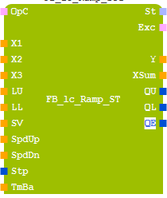

| Name | FB_lc_Ramp_ST |
| POE-Typ | Funktionsbaustein |
| Schnittstelle |  |
| Abschnitt | Bezeichner | Datentyp | Beschreibung |
| Eingang: | viusi_OpC | USINT | Geben Sie eine Beschreibung an |
| Eingang: | vir_X1 | REAL | Geben Sie eine Beschreibung an |
| Eingang: | vir_X2 | REAL | Geben Sie eine Beschreibung an |
| Eingang: | vir_X3 | REAL | Geben Sie eine Beschreibung an |
| Eingang: | vir_LU | REAL | Geben Sie eine Beschreibung an |
| Eingang: | vir_LL | REAL | Geben Sie eine Beschreibung an |
| Eingang: | vir_SV | REAL | Geben Sie eine Beschreibung an |
| Eingang: | vir_SpdUp | REAL | Geben Sie eine Beschreibung an |
| Eingang: | vir_SpdDn | REAL | Geben Sie eine Beschreibung an |
| Eingang: | vix_Stp | BOOL | Geben Sie eine Beschreibung an |
| Eingang: | vir_TmBa | REAL | Geben Sie eine Beschreibung an |
| Ausgang: | vow_St | WORD | Geben Sie eine Beschreibung an |
| Ausgang: | vousi_Exc | USINT | Geben Sie eine Beschreibung an |
| Ausgang: | vor_Y | REAL | Geben Sie eine Beschreibung an |
| Ausgang: | vor_XSum | REAL | Geben Sie eine Beschreibung an |
| Ausgang: | vox_QU | BOOL | Geben Sie eine Beschreibung an |
| Ausgang: | vox_QL | BOOL | Geben Sie eine Beschreibung an |
| Ausgang: | vox_QE | BOOL | Geben Sie eine Beschreibung an |
OpC code for operation mode
= RESET : output Y is set to input SV
= FOLLOW : increase and decrease the output, while (X1 + X2 + X3) and the output are not equal
= HOLD : holds the output to its actual value
= BYPASS : connects directly (X1 + X2 + X3) to the output
= RESET-FOLLOW: output Y is set to input SV in the first execution cycle and turns into mode FOLLOW in the subsequent cycles.
= RESET-HOLD: output Y is set to input SV in the first execution cycle and turns into mode HOLD in the subsequent cycles.
other : causes configuration error
X1 1. input of ramp-generator
X2 2. input of ramp-generator
X3 3. input of ramp-generator
LU (limit) upper value for limitation of output Y
LL (limit) lower value for limitation of output Y
SV ramp-generator is set to the input SV with OpC = RESET
SpdUP speed for the increasing ramp unit [x/sec]
SpdDn speed for the decreasing ramp unit [x/sec]
Stp Stop = TRUE: causes stop of ramp at actual Y-value
Stop = FALSE: normal follow behaviour
TmBa time base, the time delay in seconds between two executions of the function block must be applied to this input.
St bit encoded state flags of function block
bit 0 =1 : collective fault
bit 1 =1 : Y has reached the upper limit LU
bit 2 =1 : Y has reached the lower limit LL
bit 3 =1 : Y has reached the XSum (X1 + X2 + X3)
Exc delivers the error-code, if the output St-bit 0 indicates a collective fault:
2 = OpC is not valid
20 = TmBa is negative or zero
100 = LU is less than LL
Y output of ramp-generator limited by LU and LL
XSum sum of inputs X1 + X2 + X3, limited by LU and LL
QU TRUE = upper limit is reached
QL TRUE = lower limit is reached
QE TRUE = XSum (X1 + X2 + X3) is reached
Function Description
According to the operating mode, selected by the input OpC, the output Y of the ramp-generator is calculated.
The output Y is set to the input SV (set value) with OpC = RESET. In case of the operating mode FOLLOW, the output signal follows the input value either by increasing with (SpdUp) or decreasing (SpdDn).
OpC = HOLD holds the output to its actual value. The operating code BYPASS causes a direct connection (X1 + X2 + X3) to the output Y.
In case of reaching or exceeding LU or LL the output QU (upper limit reached) or the output QL (lower limit reached) is set. If the output value Y reaches the sum of (X1 + X2 + X3), the output QE is set.